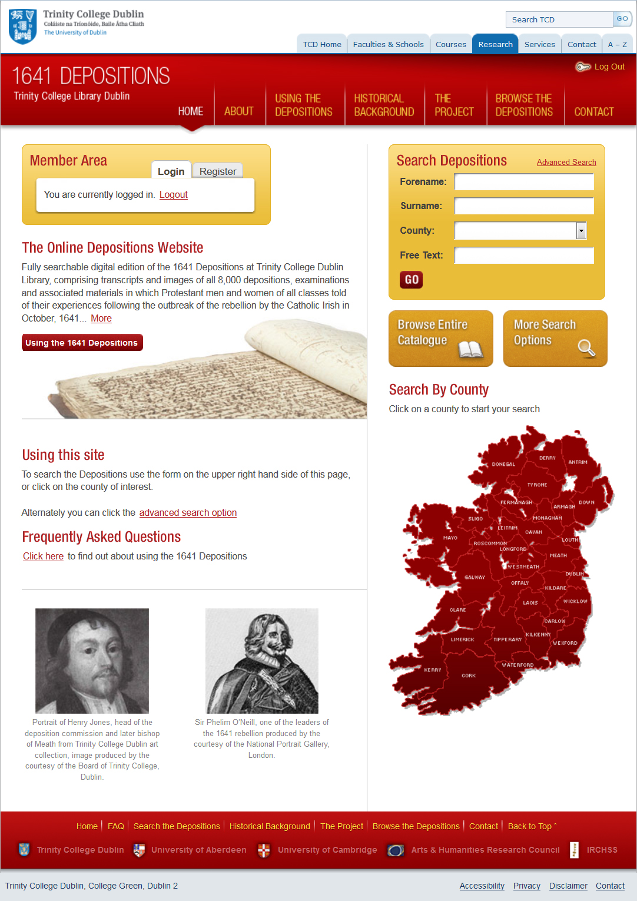
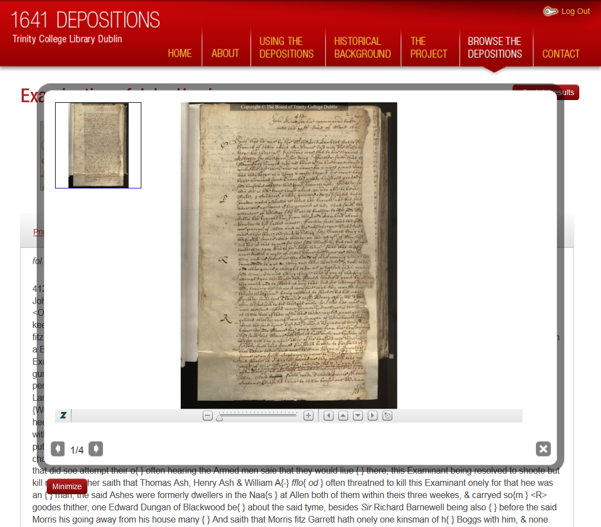
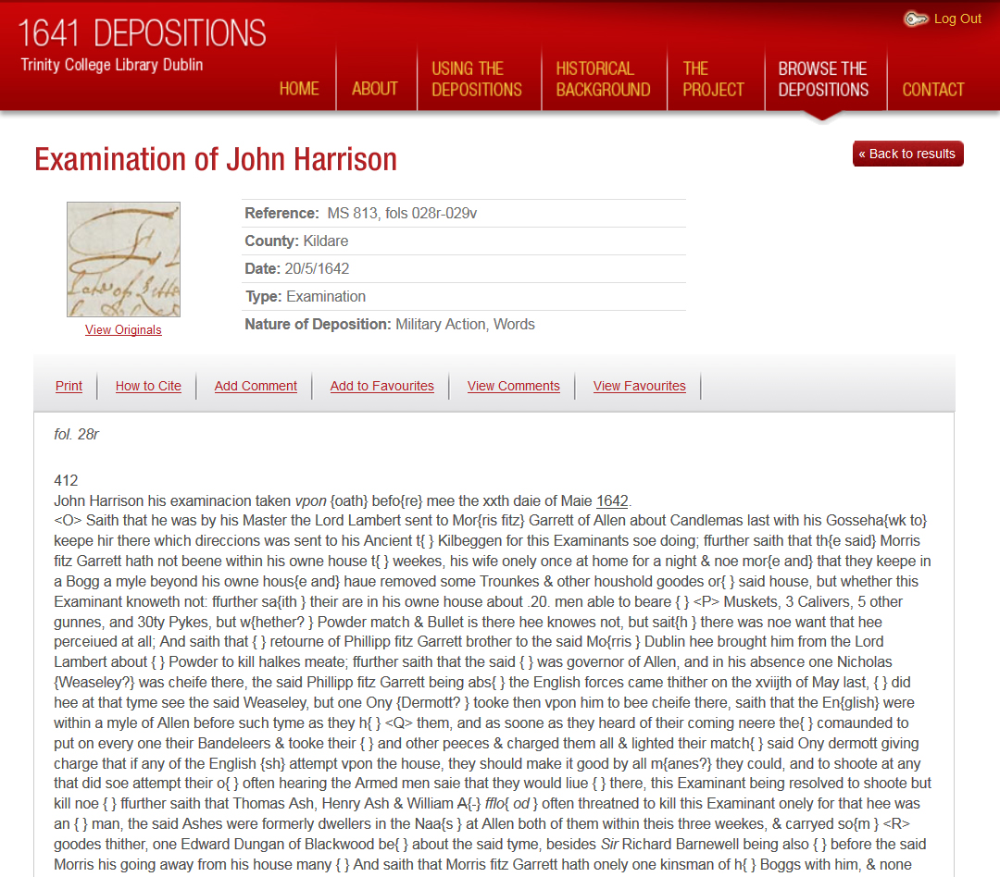
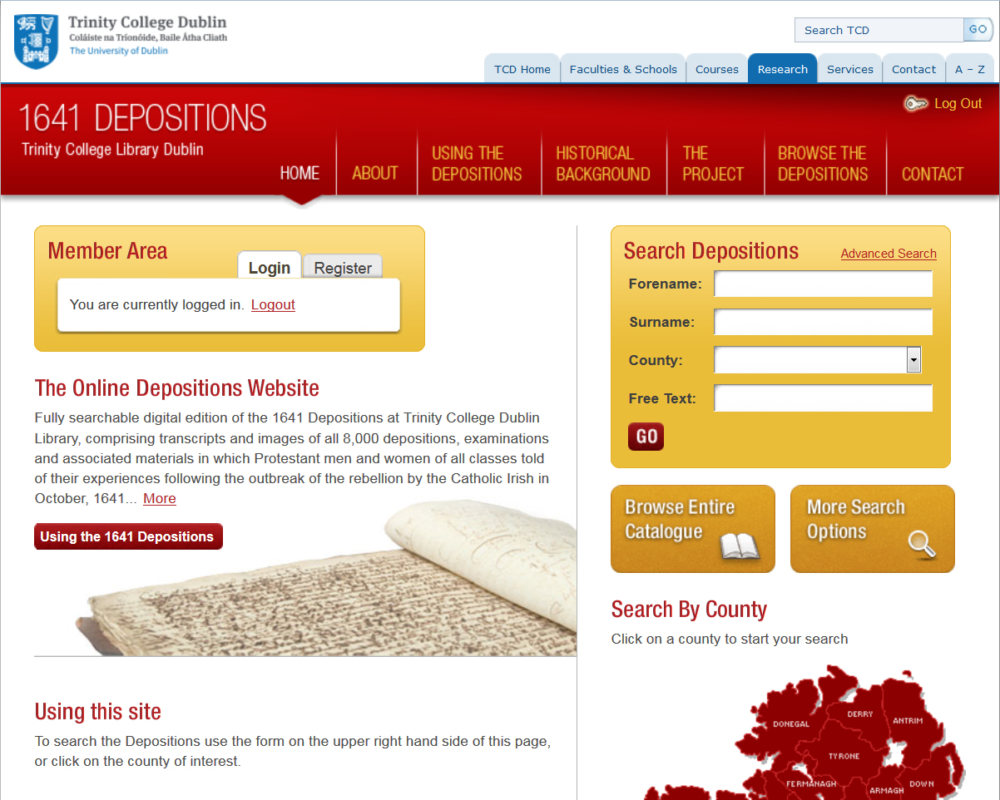
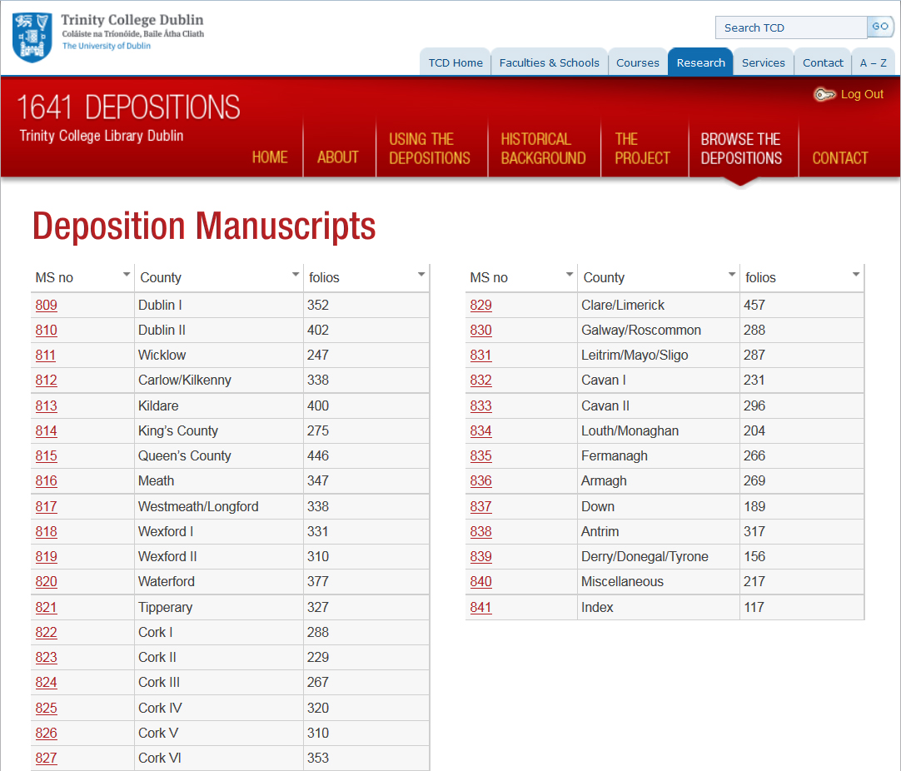
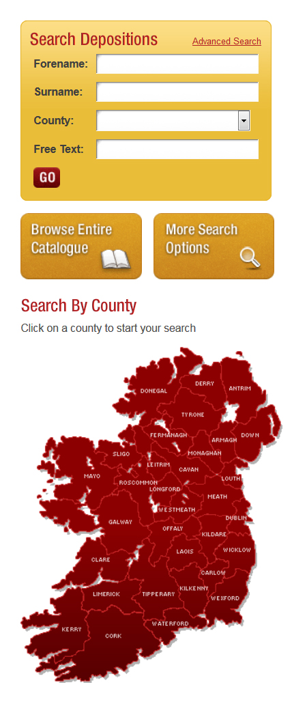
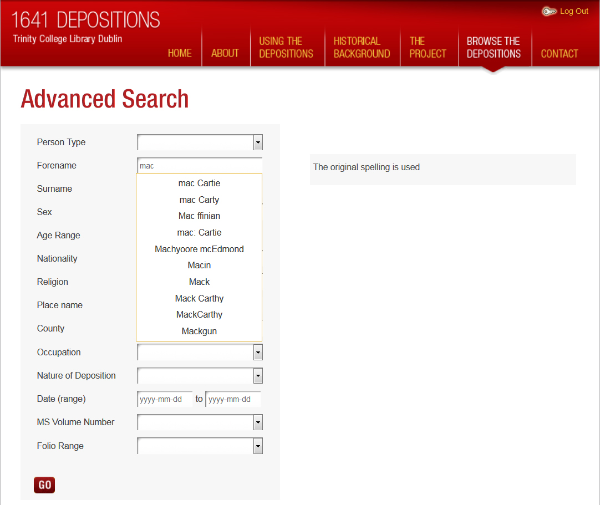
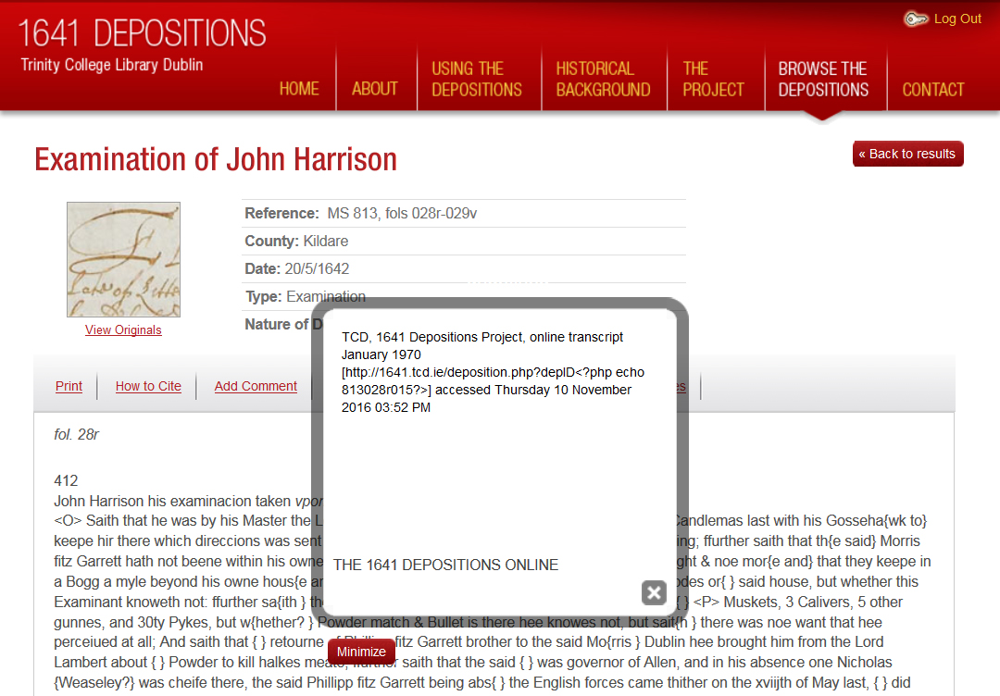
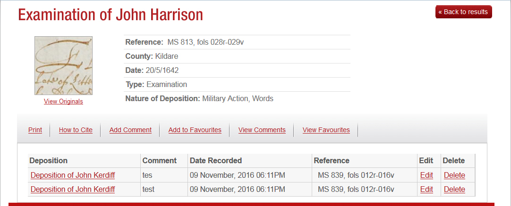

The 1641 Depositions
Table of Contents
Abstract
This paper reviews the digital edition of the 1641 Depositions, a collection of witness accounts related to the Irish rebellion of 1641. An invaluable source for the cultural, social and religious history of Ireland, this collaborative effort of Trinity College Dublin, the University of Aberdeen and the University of Cambridge provides 19,010 pages of original documents online in digital form, alongside valuable background and context information. Despite the significance of the material and the commendable effort at making it available to the public as an online edition, the project suffers from a number of technical failures and design flaws. The most significant flaw, however, is the lacking re-usability of the online material for further research due to the restrictive copyright policy and the unavailability of the TEI-encoded transcription files.
Introduction
The fully searchable digital edition of the 1641 Depositions, documenting the experiences of Protestant men and women of all classes following the (Catholic) Irish rebellion in 1641, aims to conserve, digitise, transcribe and make available online 8,000 depositions or witness statements, examinations and associated materials, amounting to 19,010 pages, kept in the Manuscripts and Archives Research Library of Trinity College Dublin (TCD).

The original 1641 Depositions
The 1641 Depositions are witness testimonies collected after the outbreak of the Irish Rebellion of 1641. That rising started – in the context of the much larger crisis of the Stuart kingdoms at that time – in the Northern Ulster region and quickly spread throughout the island as Catholic leaders took up arms against what was perceived as English Protestant oppression.
A Commission for the Despoiled Subject was set up by the English authorities in Dublin in December 1641 under the auspices of eight clergymen of the Church of Ireland, to collect witness accounts mainly by Protestants refugees, but also some Catholics, from various social backgrounds. Their testimonies document a broad range of topics, from the loss of property to military activity, to the alleged crimes committed by the Irish insurgents against the Protestant subjects, including assault, imprisonment and murder. A first collection of depositions was taken within two years of the alleged events, another in the 1650s as records of judicial interrogations and investigations by government officials gathering evidence against individuals accused of acts of murder or massacre. The latter are therefore both more focused in content as well as more formal in expression than the mostly more verbose and emotional but also more personal accounts right after the rebellion. In all, about 8,000 witness statements, examinations and associated materials, amounting to 19,010 pages bound in 31 volumes, were collected. The majority of the documents are difficult to decipher, since, due to the age and materiality of the originals, the script has faded to virtual illegibility. Furthermore, the spelling of names and places is inconsistent and erratic, as is the use of grammar and punctuation, since many different scribes were involved in the preparation of the documents.
Nevertheless, the resulting corpus provides an unparalleled resource for the social, economic, cultural, religious, and political history of seventeenth-century Ireland, England and Scotland in general, and the causes and events surrounding the 1641 rebellion in particular. The depositions were used in the examinations of the high courts of justice to persecute culprits implicated in the 1641 crimes in the decades after the events and eventually came into the possession of a private collector, before being gifted to the Library of TCD in 1741. The alleged atrocities and crimes collected in the original depositions of 1642-43 became the justification for the Cromwellian conquest of Ireland in 1649-53 and have remained part of the narrative underpinning the sectarian division in Northern Ireland. The fact that the publication of the Depositions has been dropped twice in the 20th century (once in the 1930s after the creation of the Free Irish State and another time in the 1960s at the outbreak of the Troubles in Northern Ireland) pays testimony to the ideological and cultural significance of the collection.
The digital Depositions
Background
The 1641 Depositions Project was realized as a cooperation between TCD, the University of Aberdeen and the University of Cambridge, in partnership with IBM LanguageWare. http://web.archive.org/web/20161110160626/http://www.eneclann.ie, a private company specializing in genealogical research affiliated with Trinity College, was commissioned to digitize the manuscripts and to design and implement the technology behind the project. Funding of "over 1 million Euro" was granted by the Irish Research Council for the Humanities and Social Sciences, the Arts & Humanities Research Council in the UK and the Library of TCD.
The principal investigators on the project were Professor Jane Ohlmeyer (TCD), Professor Thomas Bartlett (University of Aberdeen), Dr Micheál Ó Siochrú (TCD) and Professor John Morrill (University of Cambridge), the transcriptions were edited by Professor Aidan Clarke (TCD), with a much larger team from the various partner institutions providing further contributions to the project. All this background information is readily available on the 1641 Depositions website, with detailed attribution and information about individual contributors.
Digitization
The digitization of the delicate original volumes was concluded with special care to the conservation of the source material. The imaging process was concluded using an overhead digital array that conforms to archival standards, employing lamps that emit no harmful UV, infrared light or heat exposure. The original images were captured as 24-bit full colour scans with 600 DPI resolution, and saved as uncompressed TIFF files. The surrogate images used on the website are of considerably lower resolution and saved as compressed JPG files.

Transcription

It is claimed that the transcriptions were encoded using the TEI/XML encoding standard. Since the TEI files themselves are neither available for download nor can they be viewed on the website, there is unfortunately no way to verify the actual level of annotation.
The depositions were encoded to provide a structured view on the information contained in the documents, recording information such as the people and places involved in each deposition, the dates on which alleged crimes took place and the nature of these crimes. This information is consequently used for various search functions in the collection and to provide some basic metadata on the webpages containing the transcriptions of the individual documents. Unfortunately, there is no further information on either the TEI elements and modules used, the application of a project-specific schema, or the depth of the annotation in general. The aforementioned lack of downloadable TEI files of the transcriptions makes it impossible to further evaluate the encoding.
While it is claimed that ‘the use of TEI to describe the depositions facilitates the integration of numerous related digital resources with the 1641 Depositions’ (1641 Depositions, How have the 1641 Depositions been marked up?) there is no mention of such resources, nor are they recognizable on the website itself. Needless to say, the lack of viewable and especially downloadable (i.e. re-useable) TEI files of the transcriptions is a capital weakness of this project and in contradiction to common practice and state-of-the-art of current digital scholarly editions.
As noted above, the transcription is faithful to the originals and captures the original script and scribal intervention. While the website includes a lot of context information on both the collection itself and the historical background of the events leading to the depositions, that information is only available on separate webpages through the main menu bar and cannot be accessed directly from the transcriptions. There is no further information about the acting protagonists, the persons mentioned in the deposition or the places and dates, and no reference information to other depositions dealing with the same event or actors. The addition of editorial comments and references to other related documents in the collection would constitute an invaluable improvement.
User interface and navigation

The principal navigation on the website is done via seven menu buttons – ‘Home’, ‘About’, ‘Using the Depositions’, ‘Historical Background’, ‘The Project’, ‘Browse the Depositions’ and ‘Contact’, respectively – which are grouped horizontally at the top of the page. While some of these buttons (‘Home’, ‘Contact’) are self-explanatory, other menu headers include numerous sub-entries that fold out on mouse-over. Much useful information can be found on the website, but the composition of the main menu bar is not always clear and includes several duplicates and redundancies: ‘About’ contains a list of pages introducing the origin, nature and content of the depositions, and explaining the relevance of the source in the historical and cultural context. Other entries point toward further reading and other related useful online resources.
‘Using the Depositions’ contains several subordinate pages which give an overview and inventory of the different deposition volumes, the aforementioned transcription and palaeographic notes, but also an essay on the use of the depositions in their original context – which should probably rather be placed under the ‘Historical background’ menu – and an FAQ file which contains information that is also available, albeit in fragmentary form, through the ‘About’ and ‘The Project’ menus and seems out of place in this menu.
‘Historical Background’ groups several pages on the historical context of the 1641 rebellion: the events and political steps that ultimately led to the escalation of the conflict, the timeline of events connected to the rebellion, but also the collection itself, and a contextualization of comparable atrocities in other parts of the world and the significance of the 1641 heritage for the Protestant/British identity in Ulster (i.e. Northern Ireland).
‘The Project’ points to a number of pages that contain information about the project itself rather than its content, most notably the funders, institutions and individuals involved in its realization. There are also notes on the sustainability of the project, the technologies and standards used in the process, and the conservation of the original (analogue) collection. Of particular interest is the indication of two related projects (re-)using the digital edition of the 1641 Depositions (see below). Unfortunately, there are just short texts about these projects provided, but no links.

Functionalities and Access
While searching the database is possible without registration, access to the transcriptions or the facsimile images requires the registration of a dedicated user account. However, the account is immediately created and does not require any additional verification. Upon successful login to the ‘Members Area’ of the digital edition, users can use various search approaches to access individual depositions in the collection and – in theory – a number of functionalities linked to the individual account.
Exploring the collection

- a simple search interface enabling the search for forenames, surnames, counties and a full text search in the transcriptions,
- an advanced search interface which provides an online form with 14 different fields like ‘Place’, ‘Name’, ‘Occupation’ or ‘Role’ (victim, suspect, …) in that particular deposition,
- an interactive map of Ireland which leads to an overview of depositions by county,
- a Browse button which – mirrored in the principal navigation bar – points to a list of the individual 31 volumes of the depositions.

The search queries are not case-sensitive, but use only the original spelling. There is also no possibility to use wildcards or fuzzy search. While that approach is in keeping with the premise of the accurate and exact transcription of the original documents, it poses several difficulties, since spellings of the same name may vary due to either actual errors by the scribes or because of different language versions (Latin, English, Irish, respectively). Unfortunately, there has been no normalization of place or person names to address this difficulty.
There are no further possibilities to engage with the material. Visualisations of statistics, key concepts (e.g. in keeping with the terms used for the advanced search) from the collection and timelines, or the provision of cross-linked indices would constitute major improvements to the digital edition and should not be hard to implement based on the existing data.
Transcription view
At the core of this digital edition are the transcriptions of the individual depositions. Each transcription has a distinct identifier which is also used for citation. The interface is simple and straightforward: On top of the page, the title of the document is provided, along with a thumbnail picture of the corresponding facsimile and a reduced metadata set recording the manuscript number (‘Reference’), ‘County’, ‘Date’, ‘Type’ and ‘Nature of the Deposition’ in question. Clicking on the thumbnail launches the Zoomify viewer window which, as noted above, unfortunately cannot be moved or resized and conceals the transcription.
As noted, the transcriptions are faithful to the original regarding the spelling and scriptorial phenomena, but do not intend to recreate the original layout and appearance of the depositions from a documentary editing perspective. The font is pleasant enough to read, but since the transcription conventions used cannot be viewed alongside the transcription on the same page, a fluent perusal proves challenging. There is no scrollbar embedded next to the transcription, only the full page can be scrolled which in the case of a longer transcription removes the navigation bar at the top of the page from view.
A context menu featuring six menu tabs offers a couple of functionalities to the (logged in) user: ‘Print’ generates a very plain document for printing which only includes the transcription, but not the related metadata, and opens a print dialogue. While a preview window opens below that dialogue window, said preview can neither be resized nor scrolled nor in fact interacted with (e.g. by highlighting or copying the content).


Dissemination and Re-use
In addition to the digital edition of the 1641 Depositions, a hard copy print edition was commissioned by the Irish Manuscripts Commission in 2014, edited by Aidan Clarke who is also listed as the responsible editor for the digital edition. At this point, five volumes have been published (Clark 2013ff.).
The digital objects which were generated as part of the 1641 Depositions project are hosted and sustained within the TCD Library's Digital Collections Repository . It is claimed that the medium resolution images would be freely available there but the reviewer could not find any indication of the 1641 Deposition scans on the Digital Collections website. High resolution images for long term storage and digital preservation are reputedly available on a password protected basis to users with an academic background.
The copyright to the original images of the 1641 Depositions is claimed by the Board of the Library of TCD. Unfortunately, there is no license information: to the contrary, the website’s FAQ states that these images ‘are not available to be downloaded’. Similarly, the copyright to the transcriptions is jointly held by the 1641 Depositions Project and the Library of TCD, with the statement that the transcriptions may not be published without express permission. This restrictive copyright policy is unusual and puzzling, since the original depositions of course have been in the public domain long since and the entire collection is owned by the Trinity College Dublin Library which as the rights-holder to the originals, the digitisations and the transcriptions could just as well have decided to take an open and sharing approach. The overall inability to re-use any of the materials produced or collected in the 1641 Depositions project considerably depreciates this digital edition despite the great historical and cultural significance of the material.
The 1641 Depositions were re-used in two specific related projects submitted by original partners in the digital edition project:
- CULTivating Understanding Through Research and Adaptivity (CULTURA) aimed at delivering innovative adaptive services and an interactive user environment to empower users to investigate, comprehend and contribute to digital cultural collections.
- Language and Linguistic Evidence in the 1641 Depositions , geared towards the creation of a personalised computer environment in which linguistic researchers can conduct sophisticated discovery, analysis and visualisation of the digitised 1641 Depositions, and collaborate with other colleagues on these resources.
Conclusion
The original 1641 Depositions are a unique and invaluable source for the social, economic, cultural, religious, and political history of Ireland (and the Stuart kingdoms as a whole) and questions of Irish and Anglo-Irish identity which are topical to this day. The digitization, transcription and online provision of the corpus is a commendable effort and enables scholars and the general public to engage with a pivotal era in Irish history.
The digital edition itself is somewhat simplistically realized, but provides a lot of valuable contextual information beyond the mere transcription of the original documents. Unfortunately, many of the functionalities offered by the digital edition itself are deficient. The search functions offer different views on the material, but also pose considerable restrictions on the user due to the lack of wildcard operators and the reliance on original spelling. The personalized user-specific features like comments and favourites are faulty and therefore unusable. Furthermore, the facsimile images and the transcriptions can only be viewed individually and not in juxtaposition.
The transcription is true to the source and accurate, but lacks further enrichment in the form of editorial commentary or reference between related documents in the collection. While the academic diligence and applied methods undoubtedly make the 1641 Depositions a scholarly digital edition, the mentioned lack of enrichment precludes it from being considered a critical digital edition.
The greatest flaw, however, is the lack of any possibility to re-use the online material for further research due to the restrictive copyright policy and the unavailability of the TEI-encoded transcription files. The digital edition of the 1641 Depositions provides a thrilling and rich corpus for research, but unfortunately falls short of the largely agreed upon standards for the re-use of research data in the field of Digital Humanities. Despite the noted deficiencies, the digital edition in itself is undoubtedly a useful resource.
Bibliography
- 1641 Depositions, How have the 1641 Depositions been marked up?, http://1641.tcd.ie/project-tech_behind-markup.php.
- Aidan Clarke. 1986. 'The 1641 depositions'. In Treasures of the Library edited by Peter Fox 1986, 111-122, Dublin: Trinity College Dublin.
- Aidan Clarke. ed. 2013. The 1641 Depositions (published to date: Volumes I-V), Dublin: Irish Manuscripts Commission.
- Annaleigh Margey, Eamon Darcy, Elaine Murphy, eds. 2016. The 1641 Depositions and the Irish Rebellion, Routledge (Reprint edition).
- David Edwards, Pádraig Lenihan, Clodagh Tait, eds. 2007. Age of Atrocity: Violence and Political Conflict in Early Modern Ireland, Dublin: Four Courts Press.
- David O’Hara. 2006. English Newsbooks and the Irish Rebellion, 1641-1649, Dublin: Four Courts Press.
- Eamon Darcy. 2015. The Irish Rebellion of 1641 and the Wars of the Three Kingdoms, Woodbridge: The Boydell Press.
- Jane Ohlmeyer. 2002. Ireland from Independence to Occupation 1641-1660, Cambridge: Cambridge University Press.
- Micheál Ó Siochrú. 2008. Confederate Ireland, 1642-1649: a Constitutional and Political Analysis, Dublin: Four Courts Press.
- Sir John Temple. 1646. The history of the general rebellion in Ireland. Raised upon the three and twentieth day of October, 1641. Together with the Barbarous Cruelties and Bloody Massacres which ensued thereupon.
@article{1641,
author = {Scholger, Walter},
title = {The 1641 Depositions},
journal = {RIDE – A review journal for digital editions and resources},
number = {5},
year = {2017},
doi = {10.18716/ride.a.5.4},
url = {https://doi.org/10.18716/ride.a.5.4},
}TY - JOUR
AU - Scholger, Walter
TI - The 1641 Depositions
T2 - RIDE – A review journal for digital editions and resources
IS - 5
PY - 2017
DA - 2017/02
DO - 10.18716/ride.a.5.4
UR - https://doi.org/10.18716/ride.a.5.4
PB - Institut für Dokumentologie und Editorik e.V.
LA - en
ER - Scholger, W. (2017). The 1641 Depositions. RIDE – A review journal for digital editions and resources, (5). https://doi.org/10.18716/ride.a.5.4Scholger, Walter. "The 1641 Depositions." RIDE – A review journal for digital editions and resources, no. 5, 2017. https://doi.org/10.18716/ride.a.5.4.Scholger, Walter. "The 1641 Depositions." RIDE – A review journal for digital editions and resources, no. 5 (2017). https://doi.org/10.18716/ride.a.5.4.